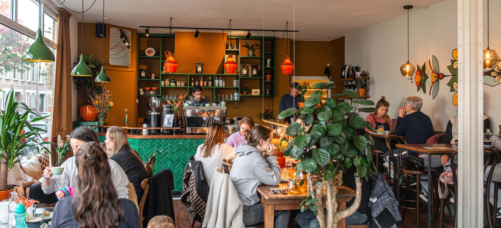
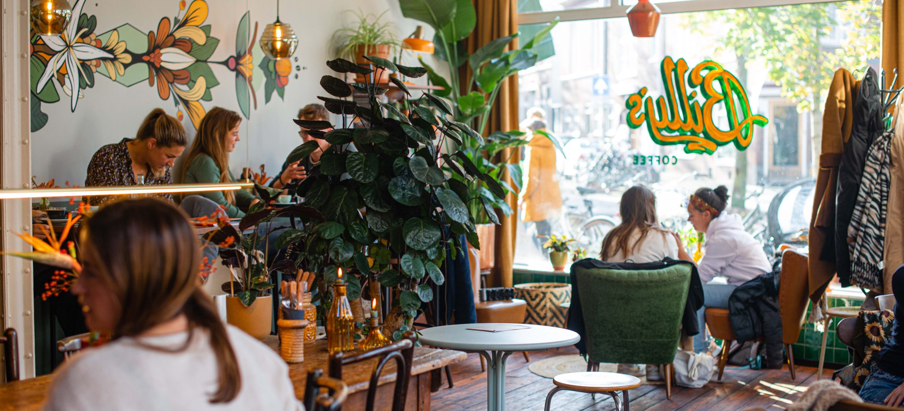
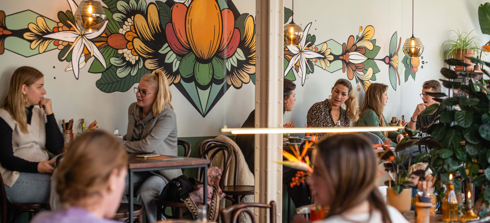

Een goeie bak koffie. Aan de Daalseweg.
Specialty coffee, ontbijt en lunch in een rustig hoekje van Nijmegen-Oost. Vers gebrand, huisgemaakt zoet, en een plek waar je gewoon mag blijven plakken.

Specialty coffee, met de tijd erbij.
Bij Billy's draait alles om goeie koffie en gastvrijheid. Onze bonen komen van Blommers Coffee uit Nijmegen, en in de keuken vind je ontbijt, lunch en huisgemaakt zoet — zoals de hangovertosti die hier zijn naam verdiende.
Geen koffie-cursus nodig. Wel als je 'm wilt.

Wat je bij Billy's vindt.
Specialty Coffee
Bonen van Blommers Coffee uit Nijmegen. Een vaste huisblend en een wisselende single origin — vraag aan de bar wat er nu draait.
Huisgemaakt zoet
Wat er die dag in de vitrine ligt, is zelf gemaakt. Vraag wat er nu uit de keuken komt.



Vintage huiskamer. Met een rauw randje.
Billy's voelt als een huiskamer waar de tijd iets langzamer loopt. Doordeweeks mag je werken, lezen, of vergaderen — in het weekend laat je je laptop thuis.
Geen schermen op zaterdag en zondag, maar wel ruimte voor gesprekken, kranten, en wie er met je is.
Tot zo bij Billy's.
Daalseweg 31, Nijmegen. Open van woensdag tot maandag — dinsdag is rustdag.